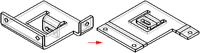

Flat Pattern command
Flattens a sheet metal part in the same document as the design model. The flattened version of the part is associative to the formed version of the part.

You can use the Flat Pattern Treatments tab on the Options dialog box to control output parameters for the flat pattern. For example, you can specify that any B-spline curves in the formed part are simplified to lines and arcs when creating the flat pattern. B-spline curves can be created when creating cutouts across bends and when using stencil font characters.
Note:
When you use this command to construct the flat pattern, Solid Edge places a Flat Pattern entry in PathFinder.
How do I
Construct a flat pattern in the sheet metal part documentApply a patch to relief in a flat pattern
Save and flatten a sheet metal part
Learn more
Flattening sheet metal partsCreating flat pattern drawings
Look up more details
Flat Pattern command barFlat Pattern command bar
Flat Pattern Options dialog box
Relief Patch command
Relief Patch command bar
Save As Flat command
Save as Flat command bar
Save As Flat dialog box
Save As Flat DXF Options dialog box
Layers tab (Save As Flat DXF Options dialog box)
Bend Data tab (Save As Flat DXF Options dialog box)
Font Mapping tab (Save As Flat DXF Options dialog box)